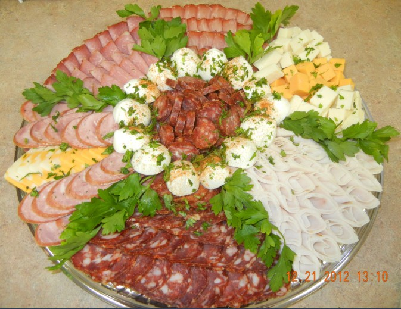

Catering
Welcome to dedas meats and delis catering page. We offer catering for all occassions. When you are planning your next party or function, think of dedas meats and deli. Check out our full catering menu. Special meat platters available. $100 minimum order for delivery. Our delivery area includes East Windsor and Tecumseh Town, from Central to Manning Road. We can extend our delivery area, call for special pricing.

- 